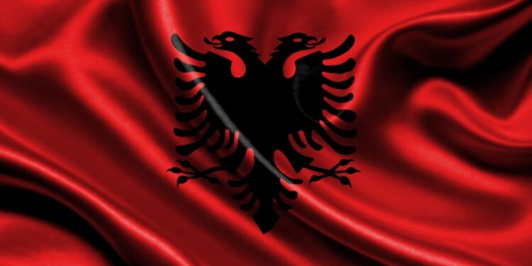

Interesting facts regarding Albanians

NO MEANS YES, AND YES MEANS NO
When talking to an Albanian you may notice that it looks like they are disagreeing with you, but they nod their heads in the opposite direction than us of the western cultures. Shake your head up and down and that means no, shake it side to side and that means yes. The only other place that I know that does the headshake the opposite way is India! It does take some getting used to.
ALBANIANS HAVE STRONG BELIEFS
The Albanian beliefs I find are very interesting. You may notice when walking around residential areas that on the fence or entrance of the houses there are teddy bears or dolls. This is to ward off any bad spirits. Another belief is if a liquid like a drink is spilt then you must pour water over that spill to ward off bad luck. Also, if you order a second raki from a café you may notice they will bring it in a new glass but pour the raki into your glass you’re already using. Apparently, if you are given a new glass then it means you get a new partner. There are many other fascinating beliefs that many of them live by too!
RELIGION WAS BANNED IN ALBANIA
During the communist era (1941 to 1992) religion was outright banned making Albania the first atheist country in the world. Many mosques and churches were burned down during the Enver Hoxha ruling. Nowadays Albania is predominately Islam, but you will find people eating pork, drinking alcohol and not wearing headscarves.
MORE ALBANIANS LIVE OUTSIDE OF ALBANIA THAN INSIDE
The population of Albania is 2.8 million but because it’s hard to find work and the conditions are poor here, there are more Albanians living outside of Albania. After the fall of communism and the collapse of the economy, it saw the largest emigration movement in Europe since World War 2. Many Albanians settled in Greece, Italy along with Switzerland, Germany and Turkey. For many here, the dream is to live outside of Albania and find work with better pay conditions and a chance to further their career or study.
THERE ARE OVER 750,000 BUNKERS SCATTERED AROUND THE COUNTRY
During the communist era, Enver Hoxha demanded that over 750,000 bunkers be built for an upcoming war. But in fact, that was all a lie and the bunkers were built for no real reason. You will find them scattered throughout Albania still today. Some have been turned into farming sheds, artists’ studios and even hotels. The only time they were partially used was during the civil war, which was in 1997.
THE CAR OF CHOICE IS MERCEDES
Just about everyone here drives a Mercedes. The reason? After the mass emigration of Albanians leaving everyone started bringing back Mercedes Benz. They are reliable cars and perfect for the poor roads that are here in Albania. Now having a Mercedes is a must-have for many. Most of them come from Germany and are perfectly legal. The Albanians have a sort of entrepreneurial sense as every time they would go back home to Albania after working in another country, they would bring a Mercedes to sell. This is how the whole country is now full of old Mercedes Benz!
XHIRO:AN ALBANIAN TRADITION
One of Albania’s tradition is called Xhiro. Early in the evening Albanians will leave their homes and go for a walk down the main road of wherever they live. This is a good chance to catch up with everyone. Sometimes the farmers will come and sell their produce or people will start little BBQs on the side of the street.
CODE OF BESA
Safety in Albania is a question I get asked again and again but there is nothing to worry about here. In fact, in Albania, there is something called a code of Besa, which roughly translates to ‘to keep the promise’. Albanians have a code of honour to look after those who need help.
THEIR LANGUAGE IS UNLIKE NO OTHER
Albanian or ‘shqip’ has no close languages at all. If you look at the science behind the language it is an Indo-European language. There are two dialects, one being Tosk (the southern dialect) and the other Geg (the northern dialect). It’s a hard language to learn, the words are long and the sounds are difficult for most.